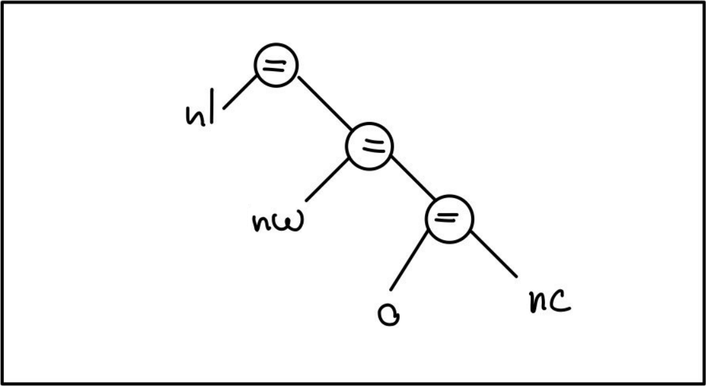
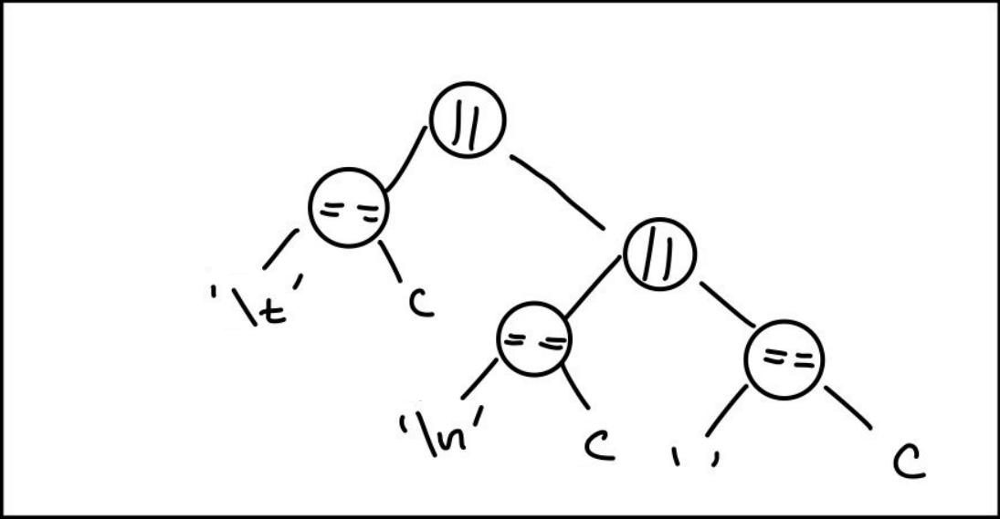

M = (Q, Σ, q0, F, T) //
Q = {Dentro de una palabra, Fuera de una palabra};
Los cambios introducidos nos permitireron regularizar la version de Kernighan y Ritchie, de esta forma con Switch estamos tratando a todas las transiciones de igual manera y esto permite hoy en dia una automatizacion con algun intereprete como un compilador.
Con la optimizacion adecuada por parte del compilador creo que no habria diferencias de performance entre ambas implementaciones.
gotogoto se sigue usando hoy en dia, su naturaleza se considera menos dañina que lo publicado en 1968. Se siguen utilizando en muchos programas realizados en C que son actualmente mantenidos, se encuentran muy presentes en el kernel de Linux tambien por ejemplo. Se puede utilizar de una forma adecuada teniendo en cuenta sus desventajas y trabajando de acuerdo a ellas, muchas veces su aplicacion puede resultar en un codigo mas facil de leer y mantener. Son especialmente util como una forma de salir de una funcion de una forma mas ordenada y legible asi como tambien para salir de muchos condicionales anidados.
Ademas de C, goto es utilizado actualmente en lenguajes como Golang y C++.